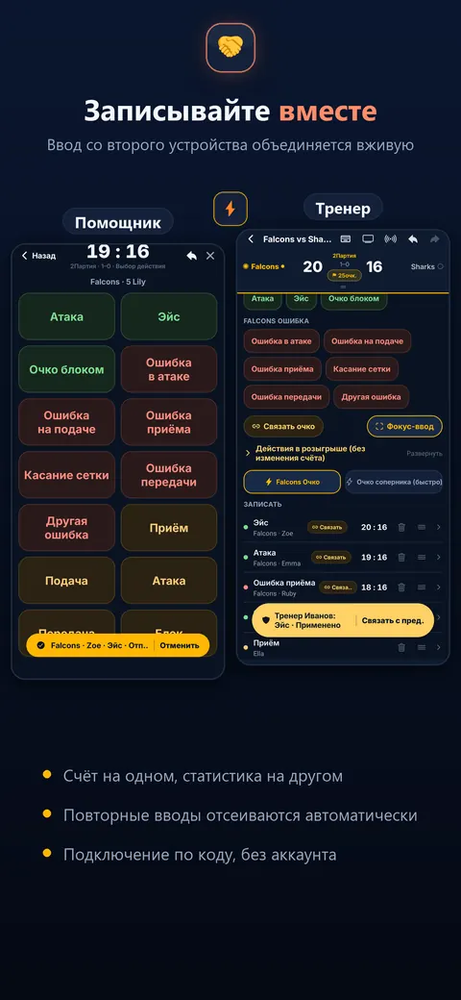
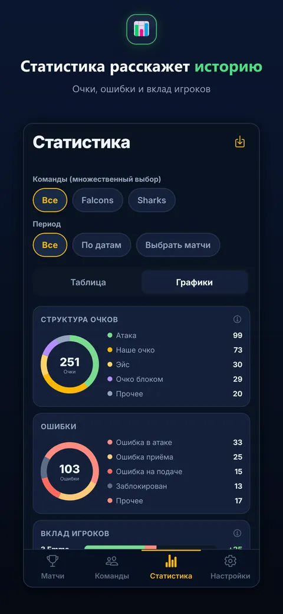
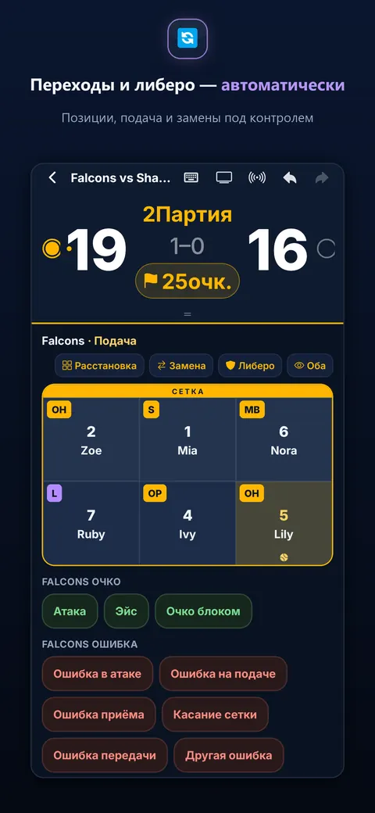

RallyStat Статистика волейбола
Последнее обновление:
RallyStat от SynIna Soft — приложение для iPhone, iPad и Android для статистики и счёта в волейболе: одно касание на розыгрыш, офлайн, без аккаунта, одна покупка. Записывайте каждый розыгрыш одним касанием, а счёт, расстановку и статистику игроков приложение ведёт само. Для более глубокого разбора RallyStat экспортирует запись матча вместе с готовым запросом на анализ. Отправьте его в ИИ-чат, которым вы уже пользуетесь, и ИИ разберёт, как набирались и терялись очки и над чем работать дальше, с подтверждающими цифрами.



RallyStat коротко
- Запрос на анализ ИИ: экспортируйте матч с готовым запросом и вставьте в свой ИИ-чат (бесплатно: итоги матча; Pro: полный журнал по розыгрышам, вместе с соперником, если вы записываете обе команды)
- Совместная запись: второй тренер записывает со своего телефона, и всё объединяется в реальном времени
- Одно касание на розыгрыш: счёт, переход и либеро обновляются сами
- Волейбол 6×6, 9×9 и пляжный (2×2)
- Запись работает офлайн, без аккаунта и рекламы
- Бесплатно до 2 команд; RallyStat Pro — разовая покупка, 14,99 $ в США (цена зависит от страны), без подписки
- iPhone, iPad и Android, 11 языков — полностью на русском
Какое приложение для статистики волейбола лучшее?
Зависит от того, что вам нужно после матча. RallyStat задуман так, чтобы записывать было быстро, а читать легко: одно касание на розыгрыш, и приложение сразу считает очки, ошибки и чистые очки каждого игрока. Для более глубокого разбора оно экспортирует матч с запросом на анализ для вашего ИИ-чата, который с цифрами объяснит, где очки были выиграны и потеряны. Если нужен скаутинг каждого касания или видеоанализ, лучше подойдёт специализированный инструмент для скаутинга.
Сравнение приложений для статистики волейбола →
RallyStat анализирует матчи с помощью ИИ?
Внутри приложения ИИ нет: статистику и отчёты приложение считает само. Чтобы получить анализ ИИ, экспортируйте промпт для ИИ-анализа на вкладке статистики. Это текстовый файл с записью матча, значением каждого показателя и порядком разбора. Отправьте его или вставьте в ИИ-чат, которым вы уже пользуетесь. Запрос просит ИИ считать прямо по данным, подкреплять каждое утверждение цифрой и ничего не додумывать, и ведёт его через итог матча, состав очков, самые частые ошибки, вклад игроков и приоритеты для тренировок. В бесплатной версии в файле итоги по игрокам и командам за каждую партию. С Pro — полный журнал по розыгрышам, поэтому анализ может проследить и ход игры, например серии проигранных очков. Если вы записываете в режиме «Обе команды», действия соперника тоже попадают в журнал, и анализ охватывает и его. В тестах на реальных журналах матчей, где были записаны обе команды, ИИ-анализ указал сильные и слабые стороны каждой команды и её самые сильные и самые слабые расстановки с цифрами в подтверждение, а также предложил действия по ходу матча и тренировочные упражнения.
Розыгрыши быстрые. Можно записывать вдвоём?
Да. В одиночку на быстрых розыгрышах что-то упускаешь. С совместной записью второй тренер или администратор команды подключается со своего телефона по коду или ссылке, и записи объединяются в реальном времени: например, один ведёт счёт, другой статистику игроков. На телефоне помощника достаточно бесплатного приложения. Основное устройство может запускать совместную запись бесплатно 3 матча, дальше с Pro. Пока она включена, обоим телефонам нужен интернет.
Приложение для статистики волейбола для тренеров клубов и школ
Один раз внесите состав, выберите стартовую расстановку и отмечайте атаки, эйсы, блоки, защиту и ошибки по ходу игры. RallyStat сам следит за переходами и либеро и сразу после матча показывает очки, ошибки и чистые очки каждого игрока. RallyStat проверяли на реальных записях школьных и клубных матчей и дорабатывали по просьбам тренеров: например, два либеро, которые сменяют друг друга по ходу матча, и статистика подачи с попытками и очками на своей подаче.
Офлайн-протокол волейбольного матча для родителей на трибуне
Нет связи в зале? RallyStat записывает полностью офлайн. Родители ведут счёт и статистику команды ребёнка, делятся одностраничным отчётом о матче в PDF, а с Pro семья следит за счётом в реальном времени по коду.
Для опытных статистиков: ввод кодами
Если вы уже ведёте статистику кодами, Pro добавляет ввод кодов с клавиатуры: короткие коды в стиле, которым пользуются профессиональные аналитики, например «11KL», чтобы успевать за темпом розыгрыша. Попробуйте бесплатно на одном матче.
Возможности
ОДНО КАСАНИЕ — ОДИН РОЗЫГРЫШ
- Атаки, эйсы, блоки, защита и ошибки — табло и статистика игроков обновляются сами
- Автоматическая ротация (переходы) и отслеживание либеро с площадкой в реальном времени
- Волейбол 6×6 и 9×9: стартовая расстановка, порядок подачи, замены и целевой счёт для каждой партии
- Фокус-ввод: крупные пошаговые кнопки — вести статистику сможет любой на скамейке
- Свободная расстановка на площадке, которая меняется вместе со счётом (по желанию)
- Исправляйте любой розыгрыш по ходу партии без потери счёта
СТАТИСТИКА, КОТОРАЯ ДЕЙСТВИТЕЛЬНО ПОМОГАЕТ
- Очки, ошибки и чистые очки каждого игрока — мгновенная сортировка
- Фильтры по команде, диапазону дат или отдельному матчу
- Сводки матчей с разбивкой по игрокам
- Экспорт статистики игроков и команды в CSV
ПОДЕЛИТЕСЬ ЗА СЕКУНДЫ
- PDF-отчёт о матче на одной странице для родителей и штаба
- Импорт и экспорт состава через CSV
- Полная резервная копия и восстановление при смене устройства
- Табло в стиле ТВ-трансляции на телевизоре через зеркалирование экрана
ВАШИ ДАННЫЕ ОСТАЮТСЯ У ВАС
- Полностью офлайн — записывайте в любом зале, связь не нужна
- Без аккаунта, без регистрации, без рекламы и рекламного отслеживания
- Всё хранится на вашем устройстве и входит в резервную копию устройства
- Прямая трансляция и совместная запись отправляют данные табло (названия команд, отображаемые имена игроков, статистику) на наш сервер, только пока они включены, — выключите общий доступ, и данные удаляются
RALLYSTAT PRO — платите один раз, без подписки
- Ввод кодов с клавиатуры: записывайте со скоростью розыгрыша короткими кодами вроде «11KL» (один матч — бесплатно на пробу)
- Прямая трансляция: родители следят за счётом по коду, а смотреть всегда бесплатно
- Совместная запись: второй тренер записывает со своего телефона, и всё объединяется в реальном времени
- Прямая трансляция и совместная запись: 3 матча бесплатно на пробу
- Статистика по партиям, показатель эффективности и графики
- PDF-отчёт с полным анализом: по партиям, эффективность, ход счёта и ротации, без водяного знака
- Экспорт сырого лога событий и готовый AI-промпт для анализа
- Неограниченное число команд (в бесплатной версии — 2 команды)
Частые вопросы
- RallyStat — это веб-приложение?
- Нет. RallyStat от SynIna Soft — мобильное приложение в App Store и Google Play. Запись работает офлайн на телефоне или планшете.
- RallyStat бесплатный?
- Да. Скачивание бесплатное, можно записывать матчи для 2 команд. RallyStat Pro — разовая покупка (14,99 долл. США в США; цена зависит от страны): неограниченное число команд, ввод кодами с клавиатуры, статистика по партиям, графики эффективности и полные PDF-отчёты. Трансляцию и совместную запись можно бесплатно попробовать на 3 матчах.
- Работает ли без интернета?
- Да. Запись, статистика и отчёты работают офлайн. Интернет нужен только для трансляции и совместной записи и только пока они включены.
- Поддерживается ли волейбол 9 на 9?
- Да. Поддерживается волейбол 6 на 6 и 9 на 9, включая стартовую расстановку, порядок подачи и замены.
- Поддерживается ли пляжный волейбол?
- Да. С версии 1.3 есть режим пляжного волейбола (2×2): пара и порядок подачи на каждую партию, напоминание о смене сторон каждые 7 очков, процент сайд-аута и брейка. Пара считается командой, поэтому бесплатная версия охватывает до 2 команд или пар.
- Нужен ли аккаунт?
- Нет. Без регистрации и без рекламы. Данные остаются на вашем устройстве.
- Какие устройства и языки?
- iPhone, iPad, а также телефоны и планшеты на Android; 11 языков, включая русский.
Бесплатные бланки для печати: расстановки, карточки состава и лист статистики (PDF, на английском) →
Тренируете ли вы школьную волейбольную команду или клуб, болеете ли за команду ребёнка с трибуны — RallyStat успевает за игрой, чтобы вы могли и дальше тренировать.